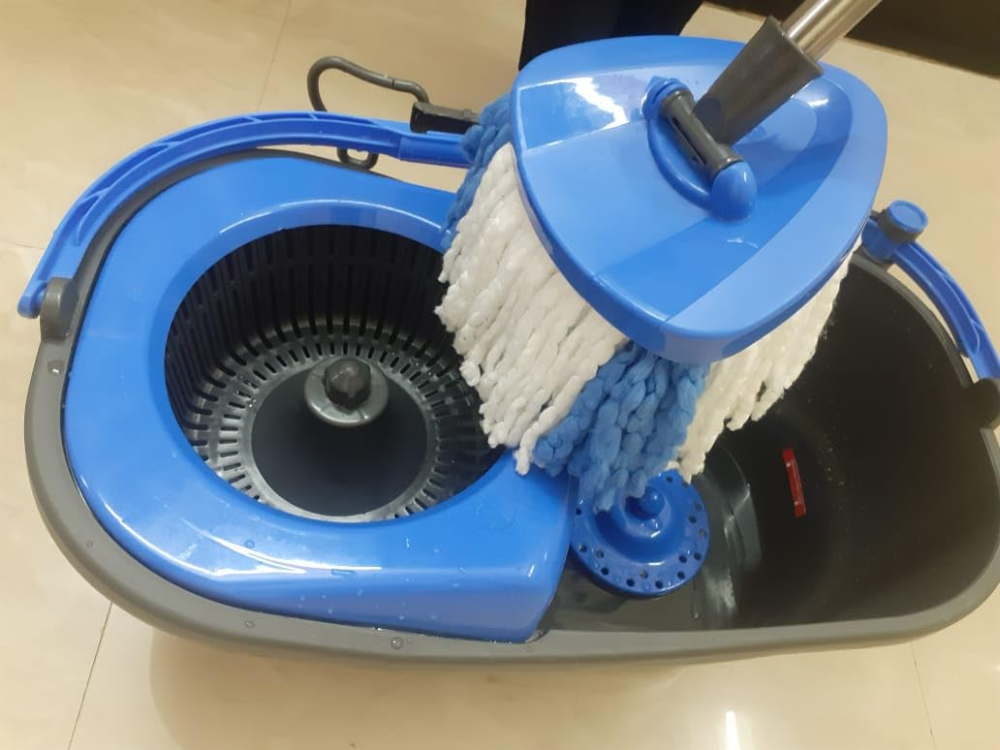
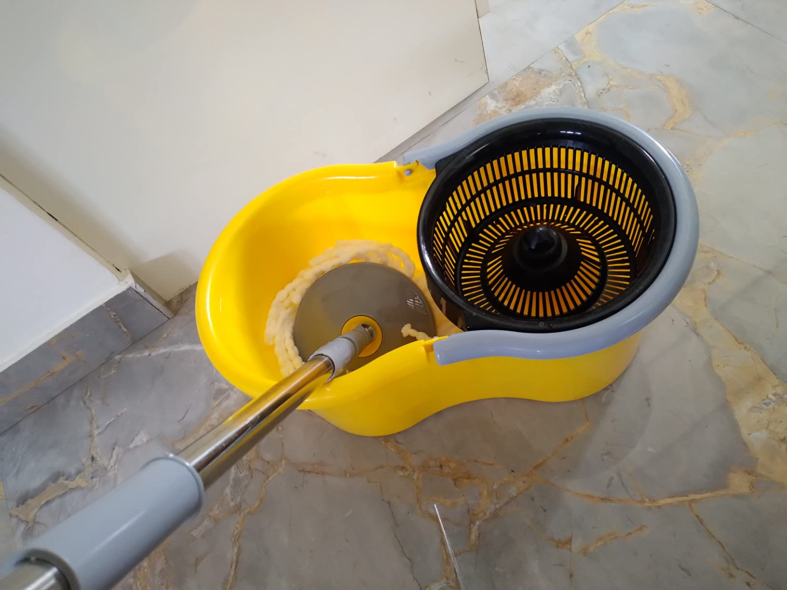
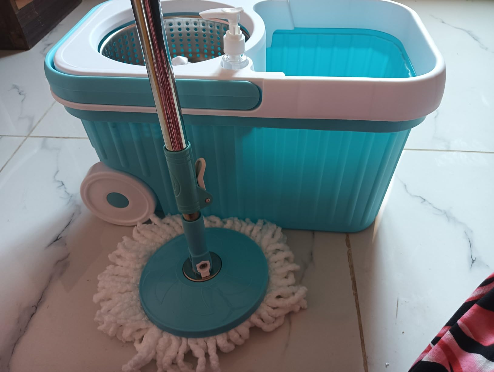

Scotch-Brite 2-in-1 Bucket Spin Mop (Green, 2 Refills), 4 Pcs

Price: ₹1,088
For latest discounts, please click on "Buy Now"
Disclaimer: This site contains affiliate links to products on Amazon, We earn from qualifying purchases to support our website and keep providing great content !
Why you should BUY!
The Scotch-Brite 2-in-1 Bucket Spin Mop (Green, 2 Refills) is a highly efficient cleaning tool designed to make your cleaning tasks easier and more effective. Its innovative design allows for easy maneuverability, and the high-quality microfiber refills provide superior cleaning performance. This spin mop is perfect for all types of floors and helps you maintain a spotless home with minimal effort. Upgrade your cleaning routine with the Scotch-Brite 2-in-1 Bucket Spin Mop.Rating: ★★★★☆ (4.2/5) - 48,305 ratings
How to USE
Using the Scotch-Brite 2-in-1 Bucket Spin Mop is simple and straightforward:
- Assemble the mop by attaching the microfiber refill to the mop head.
- Fill the bucket with water and add a small amount of cleaning solution if desired.
- Dip the mop head into the water and spin it in the wringer to remove excess water.
- Mop the floor by moving the mop head back and forth. The design makes it easy to maneuver.
- When the mop head becomes dirty, rinse it in the bucket and spin it in the wringer again.
- Continue mopping until the entire floor is clean.
- After use, empty the bucket and rinse the mop head thoroughly.
- Store the mop by placing it in a convenient location.
Enjoy a spotless home with minimal effort using the Scotch-Brite 2-in-1 Bucket Spin Mop!
Buy Now Go BackWhat people think !
"Customers appreciate the convenience and ease of use with the mop bucket set, Highlighting that it saves effort, especially for household tasks, and is machine washable. However, some have experienced issues with the spinning mechanism, which occasionally fails to function properly. Opinions on quality and value vary, with some feeling it offers good value while others are less satisfied with its durability."
Similar products
| Product | Image | Features | Price | Rating | Buy Now |
|---|---|---|---|---|---|
| Gala Turbo Spin Mop |  | Big wheel and stylish puller handle, Microfiber head, Easy to use | ₹1,799 | 4.1/5 (6,697) | Check |
| Esquire Spin Mop |  | Esquire Plastic Elegant Yellow 360° Spin Mop Set With An Additional Refill | ₹983 | 3.9/5 (397) | Check |
| Presto Elite Spin Mop |  | Plastic Elite Spin Mop With Bigger Wheels And Auto- Fold Handle, Blue, 2 Refills, Lightweight, Easy to store, Quick drying | ₹999 | 4.0/5 (2,405) | Check |